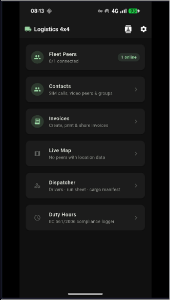
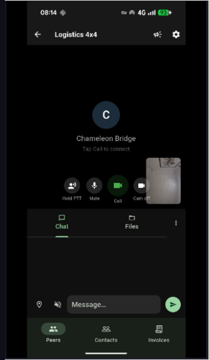
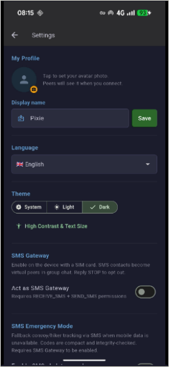

Один звонок — все в деле
Телефонные звонки и видео используют один общий чат — до восьми человек
📞 До четырех звонящих
- Обычные мобильные звонки — без приложения, без интернета
- Сотрудник таможни в будке
- Клиент в другой стране
- Головной офис по стационарному телефону
📹 До четырех участников видеозвонка
- Соединяет телефон с телефоном напрямую — без видеосервиса, без счёта
- Все видят и слышат всех
- Второй водитель в конвое
- Диспетчер и удаленный член команды
Логистика 4×4 не пытается заменить крупные проприетарные платформы, на которых работают большие курьерские сети. Она заполняет пробел, который эти инструменты не могут охватить — водитель на отдалённом переезде, которому нужен главный офис, второй водитель в трёх милях позади, инспектор в будке и клиент за границей, который может позвонить только по телефону, все связаны за секунды, с переведённым чатом, который может прочитать каждый.
Для кого это
Ситуации с высокими ставками при минимальной или отсутствующей инфраструктуре
Пересечение границы
Водитель соединяет таможенного офицера (телефонный звонок), головной офис (видео), принимающего клиента (телефонный звонок) и второго водителя в конвое (видео) — всё одновременно, с переведённым чатом, видимым для всех.
Дальнемагистральный конвой
Грузовики на расстоянии более пятидесяти миль остаются в одном общем вызове с рацией, позиции всех видны на одной живой карте, а маршруты, отправленные офисом, поступают прямо на экран водителя.
Внедорожные и треккинговые
Нет сигнала? Офлайн-компас указывает на каждого члена флота. Метки отмечают заправки, опасности и точки встречи. С направленными антеннами грузовики могут оставаться на связи на расстоянии более пятидесяти миль.
Многоязычные команды
Удерживайте кнопку разговора и говорите; устройство определяет ваш язык, переводит и передаёт текст и аудио каждому слушателю на его родном языке — пятнадцать языков, всё обрабатывается прямо на телефоне.
Доказательство доставки
Отсканируйте код склада для загрузки манифеста, отсканируйте код клиента при доставке. Отказ? Сделайте фото и письменную заметку. Захватите подпись клиента на экране.
Диспетчерская
Диспетчер видит каждого водителя на живой карте, работает с маршрутным листом, отправляет маршруты и путевые листы отдельным водителям и рассылает оповещения всему автопарку.
Карта
Улицы, спутник и гибрид — всё кэшируется для офлайн-использования
Три вида, одно касание
Переключение между уличной картой, спутниковыми снимками и гибридным режимом (спутник с названиями дорог поверх). Любое место, которое вы смотрели ранее, загружается снова без сигнала — тайлы сохраняются на телефоне.
Каждый водитель на карте
Любой, кто делится своим местоположением, отображается как живая метка. Нажмите на неё, чтобы увидеть имя и время прибытия. Диспетчер видит весь автопарк с одного взгляда — без отдельного сервиса отслеживания.
Маршруты, отправленные из офиса
Офис отправляет маршрут прямо на телефон водителя, и он мгновенно появляется на карте в виде цветной линии. Последние маршруты сохраняются для повторного использования. Смещение карты Китая исправляется автоматически.
Навигация по компасу без сигнала
Потеряли данные? Полноэкранный компас показывает стрелку направления и расстояние до каждого водителя от их последней известной позиции — полезно для внедорожных колонн и горных спасательных операций. Карта также может вращаться вместе с телефоном для навигации «по ходу движения» или быть зафиксирована севером вверх.
Оповещения и лист запуска
Экстренное вещание
Отправьте оповещение для всего флота одним действием — оно появится на всех экранах в виде цветного баннера с отдельным оформлением для чрезвычайной ситуации, инструкции, важных новостей и общей информации.
Манифест и лист запуска
Офис отправляет каждому водителю его остановки и список груза. Водитель работает по маршрутному листу; офис видит прогресс в реальном времени.
Исключения, перехваченные
Отказ или частичная доставка фиксируется на месте — фото, заметка и причина — чтобы потом не было споров.
Скриншоты
Логистика 4×4 на Android






Заинтересованы в логистике 4×4?
Сейчас на тестировании. Цена за автомобиль или за автопарк устанавливается — свяжитесь с нами, чтобы обсудить пилотный проект с вашими водителями.
Поговорите с нами о пилотном проекте ← Сопутствующее приложение ← Обзор